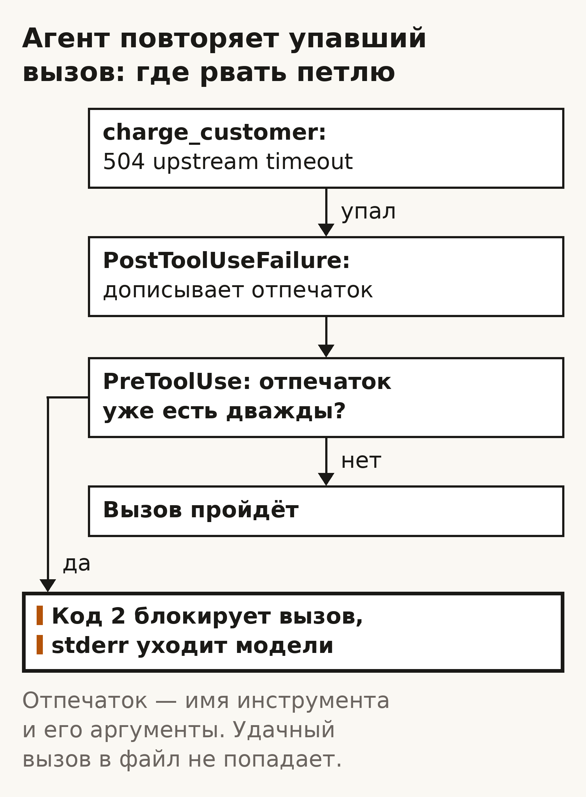

Агент
Агент повторяет упавший вызов: где рвать петлю
Сначала догадка
Прежде чем читать дальше, запиши ответ на листке или в заметке. Не подглядывай.
Агент ищет ответ через инструмент поиска. Пять результатов подряд он сам, своими словами, назвал бесполезными. В какой доле таких случаев, в процентах, агент после этого перестанет звать инструмент и ответит? (Это наш вопрос, не цифра из статьи.)
Запиши число. Первое, что приходит в голову, — что-то вроде 70–90: агент же сам сказал, что толку нет, значит остановится.
Открыть ответ
Теперь открой статью Judged Useless, Queried Anyway (arXiv 2610.06191, 5 октября 2026), раздел 1 Introduction, первый абзац под рисунком 1. Он начинается словами «Tools often fail silently». Там написано:
- после пяти подряд результатов, которые агент сам назвал бесполезными, пять агентов из семи отвечают не больше чем на 7% вопросов (это доля вопросов, где агент вообще ответил, а не доля верных ответов);
- Claude Haiku 4.5 сам по себе ответил в одном таком случае из 284, хотя, если его заставить ответить в этот момент, он прав в 114 из этих 284.
А в аннотации (abs-страница) сказано, что суждение при этом верное: там, где суждения записаны, семь агентов называют результаты сломанного источника бесполезными в 97–100% случаев.
То есть агент знает, что вызов не помогает, и всё равно вызывает снова. Знание в голове модели и следующий вызов — две разные вещи.
Оговорка, без которой факт врёт. В этом эксперименте инструмент не падал. Поиск отвечал без ошибки, только вместо нужного абзаца подсовывал абзац из чужого вопроса. Настоящие сбои инструментов авторы не проверяли и сами пишут об этом в разделе Limitations. Перенос на упавший вызов — наш. Мы считаем, что с ошибками будет похоже, и дальше в уроке это проверяешь ты сам, по своему журналу.
О чём. Одна развилка цикла агента. Инструмент вернул ошибку, и агент выбирает: повторить тот же вызов или поменять что-то до следующего. Догадка выше показывает, почему этот выбор нельзя оставлять модели. Здесь разбираем, куда его вынести и как увидеть по журналу вызовов, что петля оборвана.
Куда. В твои агентные сессии с инструментами: Claude Code в репо, Codex, свой MCP-сервер или скрипт, который агент зовёт как инструмент. Особенно туда, где вызов что-то стоит: деньги, квота, письмо клиенту, выкладка в прод.
Зачем. Ты уже пишешь в бриф «если не работает — остановись». В похожем эксперименте выше правило остановки в промпте агенты выполняли в лучшем случае частично. Работает другое: ошибка, по которой видно, что делать дальше, и стоп, который ставит обвязка, а не модель.
Умение
После урока ты умеешь: на развилке «повторить упавший вызов или поменять его» вынести стоп из брифа в обвязку (пара hook в Claude Code) и переписать текст ошибки своего инструмента так, чтобы в нём был следующий шаг. И проверить по журналу вызовов, а не по словам агента, что третьего такого же упавшего вызова нет.
Что модель «послушается» брифа, мы не обещаем: источник говорит обратное, и то про бесполезные ответы, а не про ошибки. Обещание здесь твоё: стоп держит программа, результат ты видишь в журнале.
Факты, на которых всё стоит
- Правило стопа в промпте держится частично. В той же статье arXiv 2610.06191 (аннотация): подсказки в промпте меняют, когда агент остановится, но не на чём; правило остановки или цена вызова в промпте выполняются в лучшем случае частично («followed at most partly»). Остановка следует за фактами, только когда обвязка навязывает шаг: заставляет агента ответить после пяти подряд результатов, которые он счёл бесполезными. Оговорка та же: инструмент не падал, настоящие сбои не проверены (раздел Limitations). Перенос на упавший вызов — наш.
- Ошибка — часть промпта. Anthropic в Writing effective tools for agents пишет, что ответы инструментов попадают в контекст агента и направляют его следующие вызовы, и советует писать ошибку так, чтобы в ней было конкретное и выполнимое исправление, а не голый код.
- Стоп снаружи сильнее разрешения. В Claude Code [hook
PreToolUse](https://code.claude.com/docs/en/hooks) с кодом выхода 2 блокирует вызов, и его stderr модель видит. Блокировка срабатывает ещё до проверки разрешений (Permissions). При коде 0 stderr модель не видит. HookPostToolUseFailureсрабатывает после вызова, который начал выполняться и упал; на вызов, отклонённый до запуска (нет разрешения, неверный ввод), он не срабатывает. - Предел повторов — ворота к человеку. OpenAI в A practical guide to building agents советует ставить предел повторов и действий и при превышении звать человека. Конкретного числа в гайде нет.
Механизм
Повтор упавшего вызова кажется бесплатным: упал — попробуем ещё. Он бесплатный, только пока вызов ничего не меняет в мире. Как только инструмент списывает деньги, шлёт письмо или выкатывает сборку, у повтора появляется цена. А ошибка не всегда значит «ничего не произошло»: таймаут говорит только, что ответ не дошёл.
У ошибки два свойства, и от них зависит следующий шаг.
Видно ли по тексту, что делать. 504 upstream timeout не говорит ничего: прошло списание или нет, неизвестно. Агенту нечем поменять вызов, и он повторяет тот же. 504 timeout: charge status unknown. Do not retry. Check get_charge(...) first говорит, какой вызов следующий.
Кто держит стоп. Если стоп в брифе, его держит модель, а догадка в начале урока показывает, как она держит. Если стоп в обвязке, его держит программа: вызов не уйдёт, что бы модель ни решила.
Порядок действий:
- Первым чинишь текст ошибки, если инструмент твой. В ошибку кладёшь следующий шаг: что проверить, какой формат ждать, когда можно повторять, а когда нельзя. Это работает во всех будущих сессиях, потому что ответ инструмента модель читает при каждом вызове.
- Вторым ставишь стоп снаружи. Программа запоминает каждый упавший вызов (тот же инструмент, те же аргументы). Если такой вызов уже упал дважды, третий раз она его не пропускает и возвращает текст: «этот вызов с теми же аргументами уже упал дважды, поменяй аргументы или верни человеку ошибку и что пробовал». Удачные вызовы она не считает: третий
git statusподряд пройдёт. - Бриф — последним. Строка в брифе или
CLAUDE.mdобъясняет, зачем стоп, но держит его не она.
Если инструмент не твой (чужой API, чужой MCP), шаг 1 недоступен. Тогда то, что ты знаешь про его ошибки, кладёшь в бриф или AGENTS.md как факт про этот инструмент, а стоп — в обвязку.
Развилка одна: видно ли по тексту ошибки, что делать. Если да, следующий вызов должен отличаться. Если нет, следующего такого же вызова быть не должно, и держит это обвязка.
Случай 1. Списание клиенту: таймаут, и агент жмёт ещё раз
Что агент пытается сделать. В конце месяца агент списывает оплату подписки через твой MCP-инструмент charge_customer(customer, amount_cents, currency). Клиент cus_481, 49 €.
Ставка. Каждый лишний вызов может оказаться лишним списанием. Клиент видит в банке два или три платежа по 49 €, пишет в поддержку, ты делаешь возврат и теряешь доверие. Если сервер платежей сам не отсекает повтор, повтор после таймаута — это не «попробовать ещё», а «заплати ещё».
Ошибка. Сервер платежей ответил медленно, инструмент вернул 504 upstream timeout. Списание на той стороне при этом прошло, но агент этого не знает.
Ты: Спиши у cus_481 подписку за октябрь, 49 евро.
Агент: Вызываю
charge_customer(customer="cus_481", amount_cents=4900, currency="EUR").
Ошибка:504 upstream timeout.
Похоже на временный сбой, повторяю:charge_customer(customer="cus_481", amount_cents=4900, currency="EUR")—504 upstream timeout.
Ещё раз — прошло. Списание выполнено.
В журнале три одинаковых вызова. В кабинете платежей у cus_481 три списания по 49 €. В брифе стояло «если не работает — остановись».
Почему так. Таймаут не говорит, прошёл платёж или нет. Агент выбрал повтор, потому что текст ошибки ничего другого не предлагал. Правило в брифе модель держит частично: так было в похожем эксперименте из начала урока, и мы переносим это на ошибки.
Что поменял. Два хода. Текст ошибки в инструменте:
504 timeout: charge status unknown for cus_481. Do not retry charge_customer.
Check get_charge(customer="cus_481", period="2026-10") first.И пара hook из случая 2: тот же упавший вызов третий раз не уйдёт.

Новая сессия, тот же запрос, тот же таймаут.
Агент: Вызываю
charge_customer(customer="cus_481", amount_cents=4900, currency="EUR").
Ошибка:504 timeout: charge status unknown for cus_481. Do not retry charge_customer. Check get_charge(...) first.
Вызываюget_charge(customer="cus_481", period="2026-10")— найдено списание 49 €, статус succeeded.
Списание уже прошло, повторять не буду.
Результат в журнале. Два вызова, второй — другой инструмент. В кабинете одно списание.
Где ломается: hook пропускает два упавших вызова, поэтому без исправленного текста ошибки второе списание всё равно могло случиться. Для денег главный ход — текст ошибки (и на стороне сервера ключ, по которому повтор не спишет второй раз, но это уже не сегодняшняя развилка). Hook — страховка на случай, когда текст не помог.
Случай 2. Выкладка в прод: ошибка понятная, а агент всё равно давит
Что агент пытается сделать. Claude Code после правки выкатывает сайт командой vercel deploy --prod и хочет увидеть живой URL.
Ставка. Каждая сборка — несколько минут и минуты сборки по тарифу. Пока агент крутит одну и ту же упавшую сборку, релиз стоит, а ты думаешь, что он идёт.
Ошибка. Error: Missing required environment variable DATABASE_URL. Ошибка понятная, но повтором её не исправить: переменной нет в проекте.
Агент:
vercel deploy --prod—Missing required environment variable DATABASE_URL.
Повторяюvercel deploy --prod— то же.
Повторяюvercel deploy --prod— то же.
Попробуюvercel deploy --prod --force… то же.
Что поменял. Два hook на все инструменты (matcher *), оба по документации hooks. Отпечаток вызова — имя инструмента и его аргументы (tool_name и tool_input из JSON, который hook получает на вход, сжатые jq -cS: ключи сортируются, так что порядок аргументов не мешает). Поля description и timeout у Bash из отпечатка выкинуты: описание модель пишет каждый раз своими словами, и без этого тот же deploy с новым описанием прошёл бы как новый вызов. Ловится не только Bash, но и любой другой инструмент, в том числе MCP-инструменты вроде mcp__billing__charge_customer.
PostToolUseFailureсрабатывает, когда вызов уже начал выполняться и упал: команда вышла с ненулевым кодом или MCP-инструмент вернул ошибку. Hook дописывает отпечаток в файл упавших вызовов сессии (session_idиз входа).PreToolUseсрабатывает перед каждым вызовом. Если такой отпечаток в файле упавших уже есть дважды, hook выходит с кодом 2 и пишет в stderr: «Этот вызов с теми же аргументами уже упал дважды. Поменяй аргументы или верни человеку ошибку и что пробовал». Код 2 блокирует вызов до проверки разрешений, а stderr уходит модели. С кодом 0 этот текст модель не увидела бы.
Удачный вызов в файл не попадает, поэтому третий git status подряд пройдёт, и модели никто не скажет, что он упал. Вызов, отклонённый ещё до запуска, PostToolUseFailure не вызывает и тоже не считается.
#!/usr/bin/env bash
# .claude/hooks/record-fail.sh — PostToolUseFailure: записывает отпечаток упавшего вызова
in=$(cat)
key=$(printf '%s' "$in" | jq -cS '[.tool_name, (.tool_input | del(.description, .timeout))]')
dir="${CLAUDE_PROJECT_DIR:-.}/.claude"; mkdir -p "$dir"
printf '%s\n' "$key" >> "$dir/.fails-$(printf '%s' "$in" | jq -r '.session_id').log"
exit 0#!/usr/bin/env bash
# .claude/hooks/block-third.sh — PreToolUse: блокирует вызов, который уже упал дважды
in=$(cat)
key=$(printf '%s' "$in" | jq -cS '[.tool_name, (.tool_input | del(.description, .timeout))]')
log="${CLAUDE_PROJECT_DIR:-.}/.claude/.fails-$(printf '%s' "$in" | jq -r '.session_id').log"
n=$(grep -cxF -- "$key" "$log" 2>/dev/null); n=${n:-0}
if [ "$n" -ge 2 ]; then
echo "Этот вызов с теми же аргументами уже упал дважды. Поменяй аргументы или верни человеку ошибку и что пробовал." >&2
exit 2
fi
exit 0В .claude/settings.json:
{
"hooks": {
"PostToolUseFailure": [
{ "matcher": "*", "hooks": [ { "type": "command", "command": "\"$CLAUDE_PROJECT_DIR\"/.claude/hooks/record-fail.sh" } ] }
],
"PreToolUse": [
{ "matcher": "*", "hooks": [ { "type": "command", "command": "\"$CLAUDE_PROJECT_DIR\"/.claude/hooks/block-third.sh" } ] }
]
}
}Новая сессия.
Агент:
vercel deploy --prod—Missing required environment variable DATABASE_URL.vercel deploy --prod— то же.
Третий запуск заблокирован hook: этот вызов с теми же аргументами уже упал дважды.
В проекте нетDATABASE_URL. Запускал выкладку дважды. Добавить переменную черезvercel env add DATABASE_URL production, или ты добавишь сам?
Результат в журнале. Два одинаковых упавших вызова, затем запись о блокировке. Третьей сборки нет.
Где ломается: отпечаток по точным аргументам не ловит перебор с мелкими отличиями (--force, другой флаг). Это осознанный выбор: hook рвёт буквальный повтор, а перебор лечит текст ошибки из случая 1. Порог «дважды» выбран здесь, источник числа не даёт.
Таблица решения
| Ошибка | Инструмент твой | Инструмент чужой |
|---|---|---|
Текст молчит, что делать (504 upstream timeout, 400 без формата) | Следующий шаг в текст ошибки: что проверить, можно ли повторять | Что знаешь про ошибку — в бриф / AGENTS.md, стоп в обвязке |
| Текст подсказывает | Ничего не менять; в журнале смотреть, что вызов поменялся | То же |
| Причина вне аргументов (нет переменной, база лежит, нет прав) | Стоп в обвязке и текст «верни человеку» | Стоп в обвязке |
| Вызов меняет мир (деньги, письмо, выкладка) и статус неизвестен | Сначала проверка статуса, повтор только после неё | Проверка статуса в бриф, стоп в обвязке |
Практика (~15 минут): твоя догадка против твоего журнала
Сцена. В начале урока ты записал число: в какой доле случаев, в процентах, агент остановится сам, если пять раз подряд назвал результат бесполезным. Теперь то же самое на твоём агенте и твоём инструменте, только с ошибкой. Агент получает ошибку, по которой не видно, что делать дальше, и выбирает: послать тот же вызов ещё раз или поменять его. Что он сделает, ты смотришь не в его ответе, а в журнале вызовов. Списание и выкладку из урока не бери: нужен твой инструмент.
- Догадка (1 минута). Перепиши свою долю в процентах из начала урока. Под ним запиши догадку про своего агента: остановится ли он сам, когда тот же вызов упадёт дважды, или пошлёт его в третий раз. Пиши до прогона, даже если ответ статьи уже видел.
- Инструмент и ошибка (2 минуты). Возьми инструмент, который агент реально зовёт: MCP-сервер, скрипт или команду. Нужна ошибка, которая приходит сразу и не говорит, что делать дальше: голый код, нет формата, не хватает поля. Таймаут не бери, его прогон дольше. Инструмент не должен менять живые данные. Если он списывает деньги или шлёт письма, работай в тестовом режиме или на копии.
Прогон «до» (4 минуты, из них 3 ждёшь агента). Новая сессия. Отправь задачу на один вызов, которая упирается в эту ошибку, например:
Открой отчёт
reports/q3.csvчерезread_file.В чате увидишь что-то вроде:
read_file(path="reports/q3.csv")—404: not found
Похоже на сбой, повторяю:read_file(path="reports/q3.csv")—404: not found
Ещё раз…Открой журнал вызовов сессии (в Claude Code это транскрипт с вызовами инструментов, в Codex лента команд). Выпиши ошибку дословно и посчитай, сколько раз после неё ушёл вызов с теми же аргументами. Это счёт «до».
- Стоп и текст ошибки (4 минуты). Подключи готовую пару hook из случая 2 урока, оба скрипта и кусок настроек оттуда. Первый hook запоминает каждый упавший вызов. Второй не пускает вызов, который с теми же аргументами уже упал дважды. Удачные повторы проходят. Потом одна строка: если инструмент твой, допиши в текст ошибки следующий шаг (
404: not found "reports/q3.csv". Call list_files("reports/") and pick an existing path). Если чужой, положи ту же строку вAGENTS.mdилиCLAUDE.mdкак факт про этот инструмент. - Прогон «после» (3 минуты, из них 2 ждёшь агента). Новая сессия, та же задача, то же неверное значение. Открой журнал вызовов. Посчитай упавшие вызовы с теми же аргументами и выпиши одно из двух: вызов, где аргумент поменялся (было → стало), или запись о том, что hook заблокировал вызов. Это счёт «после».
- Сверка с фактом (1 минута). Положи рядом три вещи: долю в процентах и догадку из шага 1, счёт «до» из журнала и абзац из статьи, которую ты открывал в начале урока (arXiv 2610.06191, раздел 1 Introduction, абзац под рисунком 1). Напиши одну фразу: доля, которую ты угадал, ближе к тому, что видно в журнале, или к цифрам статьи. В статье инструмент не падал, а отдавал бесполезный ответ, так что твой журнал и есть проверка, переносится ли это на ошибки.
Сдал: догадка записана до прогона «до»; в журнале прогона «до» ты посчитал вызовы с теми же аргументами после ошибки и записал счёт; в журнале прогона «после» нет третьего выполненного упавшего вызова с теми же аргументами, и ты выписал место: вызов, где аргумент поменялся, или запись о блокировке hook; в журнале твой инструмент и твоя ошибка, не из урока; есть фраза, где догадка стоит рядом со счётом «до» из журнала и с абзацем статьи (arxiv.org/html/2610.06191, раздел 1 Introduction, абзац под рисунком 1).
Не сдал: догадку записал после прогона; счёт «до» или «после» взял из ответа агента в чате, а журнал не открыл; в журнале «после» третий такой же упавший вызов выполнен, а ты записал «сдал»; стоп оставил только в брифе, и в журнале «после» нет ни смены аргумента, ни записи о блокировке; фразы сверки с журналом и статьёй нет.
Нельзя: проверять на инструменте, который меняет живые данные (боевое списание, отправка клиенту, удаление, выкладка в прод); переделывать hook так, чтобы он блокировал все вызовы подряд или удачные повторы.
Три вопроса на применение
- В журнале «после» три вызова:
"reports/q3.csv"упал,"reports/q3.csv"упал,"reports/2026-q3.csv"прошёл. Сдал или нет, и что выписываешь? - Агент три раза подряд вызывает
git status, и все три проходят. Пара hook его остановит? Почему так и задумано? - Твой инструмент списывает деньги и отвечает таймаутом. Hook пропускает два упавших вызова. Какой из двух сегодняшних ходов здесь главный и почему?
Граница
Сегодня модели не пиши «заодно перепланируй всю задачу». Работаем только со следующим вызовом после ошибки.